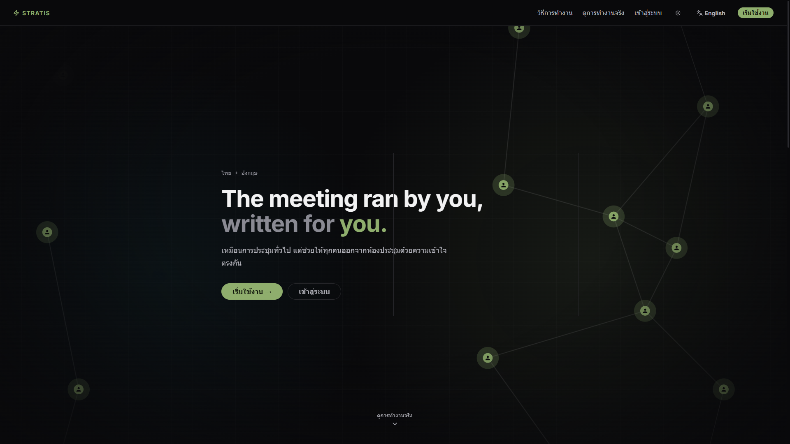

Stratis — AI Co-facilitator for Meetings
Designed and built the front-end interface for Stratis, a tool that listens during meetings and delivers private, real-time suggestions to facilitators, then produces summaries and document updates afterward. Built with React, TypeScript, and Vite, with a WebSocket-driven live suggestion feed and a tree-structured view for tracking strategy decisions over time.